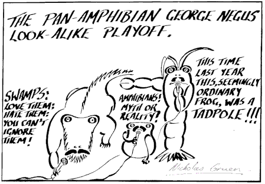

Continued from Part One yesterday.

Well folks, when I put "Overton Window - Overton Juggernaut" into Google and looked for an image, this came up naturally enough. If the cap fits . . .Over the last few years, there been a sense in which we didn't like cutting cash rates to bring them too close to zero. Thus amidst fiscal contraction - initially quite strong as the one off aspects of the fiscal stimulus ceased - though tailing off in severity, and then mining investment boom came off, the RBA showed it's penchant for very gradual easing (never cutting rates by more than 0.25% and then usually stopping for some time before the next rate cut). For the last few years, we've witnessed a situation where the government has been committed to gradual fiscal contraction - however successful it's been at getting it through the parliament - and the Official Family have forecast slack in the economy to remain for a considerable time. In its February 2012 Statement on Monetary Policy the RBA suggested this:
Employment growth is expected to remain fairly subdued in the first half of this year . . . and the unemployment rate is expected to increase modestly. Employment growth is expected to begin to strengthen later in the year [with] the unemployment rate . . . expected to decline modestly over the later part of the forecast period.
By May 2012 output was forecast to average a sub-par 3% through 2012 and then grow to a sub-par 3–3½% in calendar 2013 which would be consistent with unemployment either remaining high or drifting higher. By Feb 2013 this was the RBA story:
Employment growth has remained subdued in recent months, with the unemployment rate drifting gradually higher. . . . Employment is expected to grow only modestly in the near term, broadly in line with the outlook implied by a range of leading indicators. Employment growth is then expected to pick up gradually, but to remain below the pace of population growth over most of the forecast horizon. Accordingly, unemployment is expected to drift gradually higher.

The Bank's forecasts had inflation sitting within its expected band though its 70% confidence interval looks to my eye below the middle of the 2-3% target, while GDP growth was forecast to decline from around 3% down to around 2.25%, well under the economy's potential for the next year and a half before recovering very slowly to around 3% - which is still below the economy's potential, particularly after a long period of sub-par growth. However the cash rate was kept steady at 3.0% for February, March and April before being cut by 0.25% in May 2013.
Meanwhile in its 2012-13 budget the Treasury had forecast GDP growth to go to 3.25% in 2012-13 before falling back to 3% in 2013-14. As it forecast, this was consistent with unemployment rising from 5.25 to 5.5% into the future and staying high for the forecast period. In its 2013-14 budget, Treasury forecast the same thing - unemployment to rise slightly and remain there in the forecast period though this began from a slightly higher base of 5.5% rising to 5.75% in the next and subsequent financial years.
Thus the economic textbook which says that fiscal and monetary policy should seek to return the economy to its highest degree of growth consistent with price stability was no match for Overton's Juggernaut. There are parallels with the intellectually shambolic and practically disastrous 'checklist' approach to setting rates going into the worst recession then experienced since the Great Depression - the recession of the early 1990s. This is how former RBA governor Ian Macfarlane explained the RBA’s approach after nearly a decade of hindsight:
In Australia, the policy ‘checklist’ . . . comprised a wide range of variables includ[ing] interest rates, the exchange rate, the monetary aggregates, inflation, the external accounts, asset prices and the general economic outlook – in short, an amalgam of instruments, intermediate and final policy objectives, and general macroeconomic indicators. The checklist conveyed the idea – sensible as far as it goes – that policy needs to look at all relevant information. What was missing was some framework for evaluating that information and converting it into an operational guide for policy.
The checklist was policy for Very Serious People - the Overton Juggernaut was in full swing. The fog induced by this improvised framework was a hostile environment for critically rethinking the way we were running policy - in this case marginalising the contributions of eminent economists from the academy like John Pitchford on the macro-economic folly of official policy and Bob Gregory on its micro-economic folly.
Today, similar untheorised improvisation has provided blanket camouflage for the course on which we're embarked which dispenses with the economic textbook and plans for rising idleness of people and capital. And so we have jawboning and hoping that things will turn around - while unused productive resources pile up. Of course one would be a fool to be sure that policy is wrong to do this. The official family may be right. What we can say is that the debate has never been had. Yes we’ve had any number of speeches justifying the policy - by the seat of the pants of the architects of the policy.
It seems that many of the people signing onto the new orthodoxy are unaware that they’re peddling the very antithesis of economic orthodoxy if properly articulated (or even roughly improvised) models and textbooks are your yardstick. And what we can also say is that if we really were serious, we’d have had this debate - not as one between left and right, between those who care about unemployment and those who don’t but between people in a community of practice and a community of very largely shared interests who were aware of their own ignorance and keen to use the discipline of economics as an engine of inquiry to come to the most considered decision they can on the subject. The RBA’s research department and our universities would be releasing discussion papers outlining models which would help us understand both the costs and the benefits, and the relative risks of different courses so we could more fully understand the situation we were in and make the choices before us in as informed a way as possible. Alas that’s been virtually absent as we do it all by the seat of our pants - by the vast output of the Overton Juggernaut.
In fact some research has been done about the kind of tradeoff we're making today. I'll publish it in the next exciting episode, but here's the bottom line. The benefits of running higher interest rates are a marginal reduction in both the chance of and the severity of some future crisis. The costs are substantially lower output (this doesn't take into account the damage done to the long-term earning capacity of the long-term unemployed, but we'll leave that to one side). In the case at hand, in which the central bank's hawkish bias was admittedly much stronger than the RBA's. The authorities in Australia can rightly argue that they have kept CPI inflation within the target band of 2-3% and that they've not even undershot the middle of that band by much if at all (depending on what measures you take and from when). My response would be that their own forecasts suggest there was a good case that substantially more expansive macro-economic policy would not have increased inflation unacceptably. In any event, the calculated benefit to cost ratio in the more hawkish country was 0.4 percent!
"Instead of a determination to do something about the ongoing suffering and economic waste, one sees a proliferation of excuses for inaction, garbed in the language of wisdom and responsibility." Krugman, 2011, Against Learned Helplessness https://www.nytimes.com/2011/05/30/opinion/30krugman.html